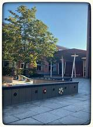
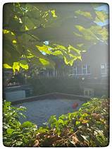
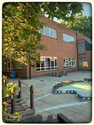

Een hartelijke basisschool voor jongens en meisjes – gedragen door gemotiveerde leerkrachten – met aandacht voor christelijke waarden – waar elk kind van 2,5 tot 12 jaar “thuis” mag zijn – met veel aandacht voor zorgbreed onderwijs – waar elk kind de kans krijgt om zich optimaal te ontplooien door kwaliteitsvol onderwijs – met aandacht voor hoofd, hart en handen! WELKOM!
  